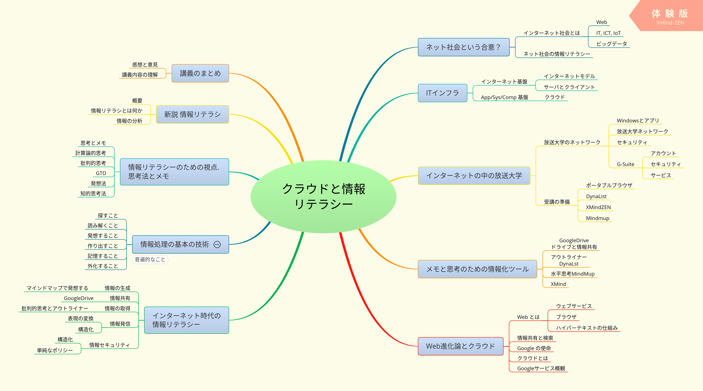
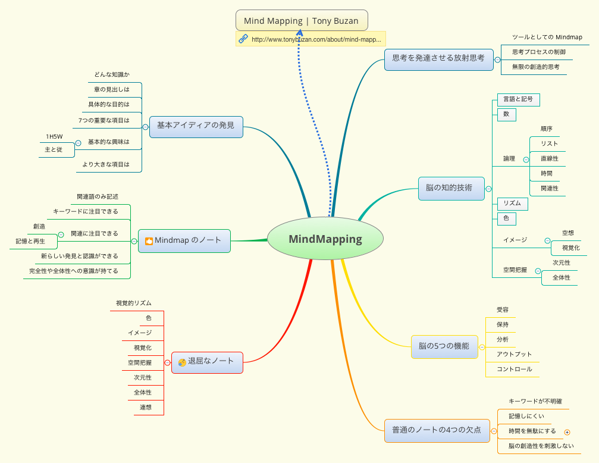
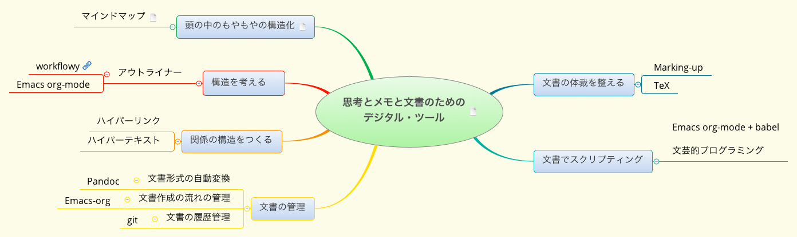

クラウドと情報リテラシー
この文書について
この文書はデジタル文書なので，できればブラウザを使って読んでほしいです。
この文書は二つの見え方を持ちます:
Emacs Org-mode 形式 (アウトライン形式)
https://github.com/masayuki054/cloud_and_information_literacy/blob/master/org/talk.org です。
HTML
https://masayuki054.github.io/cloud_and_information_literacy/talk.html
この文書は，Emacs というテキスト・エディタ・アプリで，Org-mode とい うアウトライン形式で書かれています。
文書は，自分のパソコンで作成し，Github リポジトリ
https://github.com/masayuki054/cloud_and_information_literacy
で公開しています。
講師について
自己紹介.org を読んでください。
まえがき
情報, そしてその理解や知識化って，何ですか？
- 言葉，項目を目にして，思い出すことがら
- 意味 what
- 最小限の登場人物 - 分化
- それらの間の関係
- 方法 how
- 最小限の登場人物
- それらの間の関係をどう築くか
- 理由 why
- 外の関連項目との関係
- 意味 what
- 思い出す関連項目
- 上位のこと(概念)
- 下位のこと(概念)
- 似ているもの
- 反対のもの
自分が得た理解や知識，情報をどう残し保存していますか？
- 頭の中に。なにかのキーワードをきっかけに思いだす(かもしれない)
- 自分が書いたメモや文章を，分類してとっておく
- 検索できるようにしたいなぁ
コンピュータとインターネットを利用していますか？
コンピュータとインターネットは，自分が理解するために役立ちますか？ 自分の知識を保存するために役立ちますか？
本講義では，コンピュータとインターネットを使って，人の知的活動を支 援する考え方やアプリケーションをデジタルツールと呼んでいます。
現在，Webの進化は，共同知を生み出しているのだと思います。

(XMindファイルのダウンロードはこちら./x_maps/04-Web進化論.xmind)
共同知は，検索できる知識の集まり。デジタルツールを通して，検索しその存 在を知り，読み書きします。デジタルツールは人が考える助けをしてくれもし ます。

クラウド・コンピューティングは，いろいろな場所から，様々な機器を使って， 同じアプリで，情報も理解も知識を取得・生成・保存できることを目指してい ます。
「ネット社会は，Webによる情報共有とクラウド・コンピューティングの推進に 合意している」と講師は考えています。
その本質はどこにあって，我々はそれとどうつきあっていくのか， それが情報リテラシーだと思います。
インターネット社会のトレンド
最新ITトレンド図解本の図を眺めながら，ネット社会のトレンドについて 考えてみましょう。
- クラウド・コンピューティング
- モバイルとウエアラブル
- ITインフラ
- IoTとビッグデータ
- スマートマシン
授業内容
放送大学のインターネット環境を体験的に概観します。
膨大な情報と過剰なサービスが存在するウェブ、さまざまな情報機器から 利用できるクラウドとは何か、体験的に学びます。
多くの情報の中から、自分の情報を確立させる技術が情報リテラシーです。 情報リテラシーを高めるための考え方と技術を、体験的に学びます。
講義の前半で、メモと思考のためのツールを紹介します。講義内容をメモ し、考えながら受講してください。
講義の目的
いろいろ検討した結果が以下です:
- 考えることについて考える，メモは考えたことを記録すること
- 人の文章や考えを理解することについて考え，そのための技術を考える
- 自分の考えをまとめることについて考え，そのための技術について考える
- 思考過程について考え，知的思考の技術について考える
- メモのための(デジタル)技術の活用について考え，技術を習得する
ここでは，メモという言葉を，たくさんの思考(過程)の記録の集りという イメージで使っています。
講義の概要
やり方
講義を通して，いろいろな考え方を紹介し，私の理解を説明します。 一緒に考え，自分の考えをメモにまとめてください。
自分流でかまいません，できれば，章ごとに一枚の紙を使って， マインドマップ形式のメモを描いてほしいです。
最初は紙と色鉛筆で手描きで，なれてくれば XMind/ZEN を使ってみま しょう。
- 講師のXMindマップをダウンロードして，それに追加や編集を加えるの も推奨します。
アウトライナーを使うのもお勧めです。後で，Web アプリの Dynalist について紹介します。
講師のテキストをコピペして，構造化して，自分のメモを作成する方法 はお勧めです。
講義の最後に，自分の講義メモを振り返り，見直し・修正し，自分の意見・ 感想を書いて，レポートとして提出してください。
内容一覧
 (./x_maps/c00-クラウドと情報リテラシー.xmind)

受講の準備
USB で持ち運ぶ アプリ
- Google Chrome Portable
- XMind/ZEN
Chrome の使い方
Google ドライブを使ってみよう
自分の マイドライブ (https://drive.google.com/drive/my-drive) に
[ ]「クラウドと情報リテラシ」という名前のフォルダを新規作成[ ]そのフォルダの共有設定する- フォルダを右クリックして，メニューから，「共有」を選ぶ
[ ]講師を招待してください
このフォルダをレポート提出に使います。
Mindmup2 を使ってみよう
下記のページを読んで，使ってみましょう。
XMind/ZEN の使い方
下記のページを読んで，使ってみましょう。
アウトライナー (Dynalist)を使ってみよう
下記のページを読んで，使ってみましょう。
放送大学のインターネット環境を体験的に概観します。
ip address/domain name
PC と LAN と サーバ と インターネット
explore
- ネットワークから見えるもの
Powershell コマンドを使って
- ipconfig
- arp
- nslookup q=a, q=soa, q=mx, ouj.ac.jp., 8.8.8.8
- netstat
PC
G Suite
Google アカウント
- メールのために，G Suite を使っているんですね。
- 学生番号@campus.ouj.ac.jpがグーグル・アカウント
- 自然と，Google の他の機能が使える。
- Google の使い方のために，下記サイトを見てみましょう：
- 自分のグーグルアカウントを確かめましょう。 講師のアカウントは，spct03a@campus.ouj.ac.jp です。
本講義用のメーリングリストを作成しましたので，使ってみます。
講義の情報を配信します。
- 皆さんは，Gmailを使って講師のメールが届いたか確認してくださ い。
- Google Driveを使ってみましょう。
- 講師の用意した，Google Driveのフォルダーを使ってみましょう。
- スマホでGoogleDriveを使ってみましょう。
- iPhoneの人は GoogleDrive アプリをダウンロードしてみてください。
- 講師へメール，ドライブの利用など
ここまでで，うまくいけば，Googleを通して，講師と共同作業することが 可能になったはずです。
メモと思考と理解と知識
思考とは
./i_maps/メモと思考について考えたこと_imap.pdf を見てください。
考えて，理解し，覚えること
- (考える) 関連項目を集めて，
- (考える) 項目関係を把握し，
- (理解する) 項目と関係を，構造化する
- (納得する) 既存の知識と融合する
- (覚える) 時間が経っても，知識の欠片を切っ掛けに，思い出せ，説明できる
- 幾つかのキーワードを切っ掛けに全体が思いだせる
考えるための項目，考えたプロセス，考えてできた項目間の関係， 理解した構造，覚える
メモとは
./i_maps/メモとは_imap.pdf を見てください。
思考の基本
原理
抽象化 を見てください。
- 2つの項目を一緒に並べ，
- 2つの項目の間にある関係を認識し，
- 2つの項目のその関係を一纏めにし，
- 全体に名前を付る
思考とメモ
- 理解し，メモにまとめること
- メモから，発想すること
- 思考はプロセス
知的思考の技術とメモの必要性
- 思考過程の枠化と順化，
- 思考対象と思考過程の記録がメモ
- 思考結果の記録と外化もメモ
- 思考し続けるための構造化されたメモが必要
デジタルツールによる思考の支援
デジタルツールは，インターネットとコンピュータを前提にした文書の読 み書きそろばんをおこなうためのツール。文書というよりは，情報と言っ たほうがいいかもしれません。
 を見てください。
言葉の説明は，WebとWeb上のデジタル文書技術 を読んでください。
- Web文書間の構造 ハイパーリンク
- ハイパーテキストでWeb文書がアプリにもなる
- 文書の体裁を整えるマークアップ
- 文書の構造を記述する アウトライン
- 知識の表現 マインドマップ
思考のためのデジタルツール
- 文書の構造 (アウトライン) を記述し，編集し，概観するためのアプリ が，アウトライナー
- 知識の表現 (マインドマップ) を記述し，編集し，概観するためのアプ リ.
マインドマップとは，その使い方
アウトライナーとは，使い方
アウトライナーであらすじを捉える。
- ./docs/outline.html に講師の考えが書いてあります。
思考の方法
ここでは，思考する方法について，考えてみます。
理解したことを，アウトライナーかマインドマップにメモしましょう。 アプリを使わず手書きでもかまいません。 レポート提出の一部になります。
はじまり: 図で考える，シンプルになる
僕が『図で考える。シンプルになる。』を書いた理由 | ビジュアルシンキ ング 櫻田潤, 2017年10月11日
7つの図の使い方を学び，図の使い方の演習をおこいます。
この演習を通して，考えることや，考えたことを，図で表わすことの意味を 実感してください。
抽象化と分解 (再度)
抽象化とその逆の分解が思考の原理 だと思います。
図で考えるときも，アウトラインでも，マインドマップでも，その考え方 や操作の中に，抽象化と分解が表われていると思います。考えて，考えた ことをメモしてください。
論理的思考
思考法の紹介
So what, why so, MECE (mutually exclusive, collectively exhaustive)
論理的に物事を考えるために３つのテクニックを身につけよう - NAVER
漏れなく，ダブリなく collectively exhaustive, 自分的には，まんべんなく網羅的に mutually exclusive, 相互排他的に，
自分的には，ソフトウェア開発の経験から，
- 段階的に，スパイラル，(ぷろせす)
- 抽象化，モジュール化 (構造)
- 詳細化
発想する場面は，MECE
計算論的思考
- 論文のまとめ.org
- Computational Thinkingとは何か - 小さなごちそう わかりやすい解説です。
計算論的思考は，情報処理的に考えることとその評価基準です。コンピュー タ科学分野での思考法ですが，対象をコンピュータだけでなく，人やシス テムを含めて考え，子供のときから身につけるべき考え方であるといわれ ています。
ComputationalThinkingとは何か - 小さなごちそう の内容と図について考え，考えた事をメモしてください。
批判的思考
入ってくる情報を鵜呑みにせず，咀嚼して自分の知識や理解とする態度と 思考方法について書かれています。
批判的思考について.org で説明します。
講師のまとめと感想が後半にありますので，参考にして，自分の考えをメモと して纏めてください。
GTD – (思考を) 続けるためのメモの技術
GTD関連のメモ を概観してみてください。
./i_maps/僕にとってのGTD_imap.pdfに，継続して思考を続けていくため のメモの技術として捉え
- やらなければならない事が沢山あるときに，
- それらをこなしつつ，
- 心が安定した状態を長く保つためのメモの技術
- 関心項目を書き出す，
- 関連する項目をすべて洗い出し，
- 項目間の依存関係で構造化し，
- 全てを書き出し，一旦忘れる
- 適当な項目を選び，行なう
トップダウンに考えて， ボトムアップに実行していく，方法。
ソフトウェア開発手法，
大きな目標に向って，ボトムアップに考え，すこしづつ実行していく方法
- スパイラル開発モデル
- テスト駆動開発
- 大きな要求を細かな要求に分割し，
- 細かな要求の実現を重ねて， おおきな要求を実現する
発想法
「なにか新しいことを思いつく」ことについて考えてみましょう。
アイディアの作り方
アイデアの作り方は著名な本です。下記にまとめがあります。 ざっと目を通し，発想することについて自分でまとめてみましょう。
次のマップは，講師の読書ノートをマップ化したものです:
水平思考 - Wikipedia
水平思考.org まとめです。
- 深かく思考する垂直思考に対して
- 思考に広がりをもたせる
KJ法
下記サイトを概観してみましょう。
まとめると，
- 思いつくまま，関連情報をカードに書きだし，
- 関連するものをグループ化し，
- グループに見出しをつける。
- グループに対して，同じグループ化を行い，グループ化できなくなるま で，繰り返す。
- グループ間の関係について考える
- グループとグループ間の関係を説明する文章を書く
マインドマップ
放射思考 (Mindmap) です。
発想法として，マインドマップを使うことについて，考えてみてください。
知的思考のための7つのステップ
下記の内容を理解し，まとめを作成しましょう。
自分の知的思考技術について考えましょう。
知的思考技術についてのまとめメモを作成してください。
知的思考の技術―考えるフレームを強化する7つのステップの思考術
知的思考の技術勉強_imap.pdf は講師の読書ノート (手書マインドマップ)です。
下記は，本の各章のまとめを，さらに簡潔に記述し直したものです。
目的探索の思考
- 考え方のポイント
- 思考や行動の目的を明らかにするために、
- 何かを始めるときには自分自身に対して「そもそも何のために？」とい う問いかけを行うことが大切である。
- 陥りやすい失敗
- そもそも目的を考えていない。
- 目的は考えてはいるが妥当性が低い。
- かつては高かった目的の妥当性がいつしか失われてしまった。
主なツール
- 状況の構造化図
- 目的の連鎖
観察の思考
- 考え方のポイント
- 心理的要因や発信者の意図に惑わされない。
- 偏りなく多面的に物事を捉える。
- 陥りやすい失敗
- バイアスによる阻害。
- 他社の主張をそのまま受け入れてしまう。
- ウソに騙されてしまう。
- 主なツール
- 4分割マトリックス
発想の思考
- 考え方のポイント
- 豊かなアイデアを得るためには、3つのブロックで思考を足止めされる ことなく自ら積極的に思考し、「量が質を生む」の原則を貫きとおすこ とが大切である。
- 偏りなく多面的に物事を捉える。
- 陥りやすい失敗
- アイデアが天から降ってくるのを期待して、思考することなく、ただ待 ち続けてしまう。
- 発散思考と収束思考を同時に使って、思考の効率が低下する。
- 認識、感情、文化の3つのブロックに足止めされてしまい、モノの見方・ 考え方が偏ってしまう。
- 主なツール
- ブレイン・ストーミング法（BS法）
- 属性列挙法
- チェックリスト法
- 欠点列挙法
- 希望点列挙法
- ゴードン法
- NM法
分類の思考
- 考え方のポイント
- 分類とは、思考対象となる情報をその思考の目的に従って「違う」部分 で分け、「同じ」部分でくくること。
- 分類することによって、わからないことがわかるようになる。複雑なも のが単純化され、あいまいな状況が解明され、物事が整理されて使いや すくなるといったさまざまなメリットを享受できる。
- 陥りやすい失敗
- 事象や問題を漠然と捉えてしまう。
- 思考の目的にあわない分類基準を設定してしまう。
- 分ける際にモレやダブリがある。
- 主なツール
- 目的にあった分類基準を設定する。
- 抽象水準を統一する。
- モレなくダブリなく分ける。（MECE）
構造化の思考
- 考え方のポイント
- 構造化とは、思考対象について分類した構成要素（部分）がどのような 関係（つながり方）にあるのかを明らかにし、思考対象（全体）の意味 を理解すること。
- この世の中に存在するものは、さまざまな要素が依存しあい、影響をあ たえあい、関連しあって存在している。何かを知ろうとして思考するた めには、それらすべての関係を押さえなければならない。
- 陥りやすい失敗
- 組織設計、企画書、プレゼンテーションなど、あらゆるビジネスシーン で分類することはできても、「くくる」「まとめる」という構造化の思 考が弱い。
- 部分は理解できるが、全体として何を伝えたいのかわからなくなってし まう。
- 人は「木を見て森を見ないタイプ」と「森を見て木を見ないタイプ」に 分かれる。木も森も両方捉えるものの見方ができない。
- 主なツール
- ツリー構造
- マトリックス構造
- プロセス構造
意思決定の思考
- 意思決定には、とっさの意思決定とじっくり考える意思決定がある。
- 特にとっさの意思決定の際には、意思決定の先送りはしない。
- じっくり考える意思決定から”正しい反応パッケージ”を複数用意しておく。
- 反復訓練により迅速に”正しい反応パッケージ”を選択できるようにしておく。
表現の思考
- 思考の幅を広げるためには表現の手段を多く持つこと。
- どのようなことでも言葉で表現（文章に書く）することを習慣付けること。
- 数字で表現することに日頃から慣れておくこと。
- 図解は見栄えではなく、シンプルでわかりやすいこと。
情報リテラシー
溢れる情報を読み解き発信する技術のことです。
データと情報と知識の違いを知る，知識から情報へ，情報発信など，思考 法と関連が深いと考えとりあげました。
"新説 情報リテラシー―ソーシャル時代を生き抜くための情報スキル | 杉浦司" の
- 講師の読書メモ(1部のみ)
- 章立てアウトライン
- 章立てをマインドマップ (ダ ウンロードして見てください)
を使って筆者の考える情報リテラシーとは何かを，読み解いていきましょ う。
自分の解釈や理解のメモを作成してください。
特に，下記の章について，アウトライナーまたはマインドマップを用いて， 配布資料を読み解き，まとめを作成してください。
- 新説情報リテラシのはじめに
- 3章 情報リテラシとは何か？
- 6章 情報の分析/情報が持つ本質を解析し，有用な知識を導入する
Googleについて
- Google の使命
- Google 検索の仕組み
- G Suite
8 レポートの作成
全体のまとめ・レポート作成 (8時間目の演習として)
メモと思考とデジタル技術を振り返り， 描きためたメモを振り返り，メモを纏め， まとめ(のメモ)を作成してください。 そのまとめをレポートとします。
具体的な提出方法は，講義中にお知らせします。
講義を通して得られたことをまとめたハイパーテキストを作成しましょう。
Google ドライブに
dynalist は リンク
Mindmap は，Google に保存し，リンク
- クラウドとは
- 講義への感想・意見を作成してください。
形式は，Dynalist か Mindmup でお願いします。